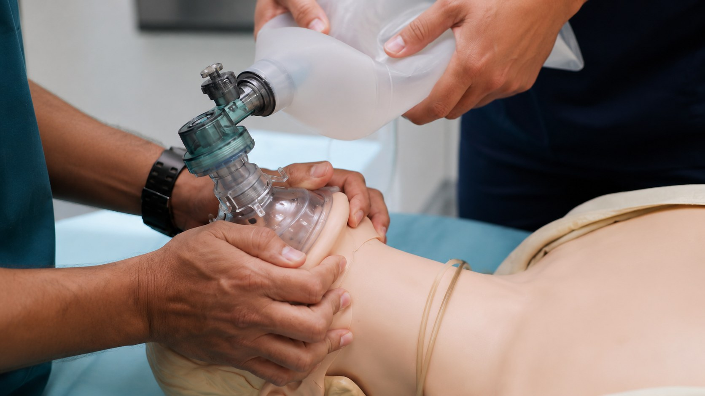
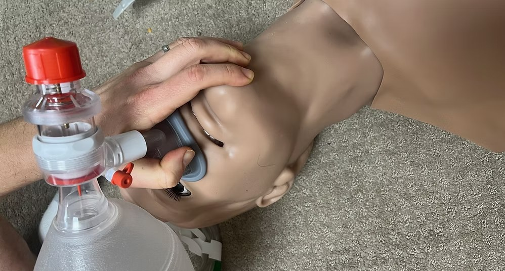

RhinoBVM is a nasal-first manual ventilation device designed around one-handed use — so a single rescuer can hold a seal and ventilate effectively.
Effective manual ventilation depends on a tight face-mask seal. For a lone rescuer, that seal competes with everything else the patient needs — and a leak means breaths that never reach the lungs.

RhinoBVM is built around a single goal: letting one rescuer ventilate effectively with one hand, without waiting for a second set of hands to arrive. Its nasal-first interface — paired with a patented sealing design — makes a reliable seal achievable single-handed, regardless of the rescuer's hand size or the patient's anatomy.

The organizing principle: geometry and grip arranged so a single rescuer can establish and hold ventilation with one hand — whatever their hand size.
A nasal-first sealing design, protected by issued U.S. patents, that holds with less force and fewer leak paths than a full-face mask.
By freeing the other hand, one provider can deliver controlled breaths without a partner dedicated to holding the mask.
RhinoBVM connects to the bag-valve resuscitators already in use, so it fits existing protocols and equipment rather than replacing them.
Design patent pending.
The patients hardest to ventilate are often the ones whose faces won't hold a mask seal — a leak, a gap, a rescuer forced to guess whether air is actually reaching the lungs. Because RhinoBVM seals around the nose rather than across the mouth, cheeks, and jaw, it sidesteps many of the conditions that defeat a conventional face-mask seal.
Clinicians use the BONES mnemonic to anticipate difficult bag-mask ventilation — the patient factors that break a face-mask seal. Each letter represents a trait that, on its own or stacked with others, makes it harder to hold a seal with a standard mask, and none of them are rare in everyday practice.
| Factor | Why it matters | |
|---|---|---|
| B | Beard | Facial hair opens leak paths a face mask can't close, and can hide a receding jaw. |
| O | Obese | Excess soft tissue around the face and neck defeats a seal and raises obstruction risk. |
| N | No teeth | Edentulous faces collapse inward — among the most common reasons a seal fails. |
| E | Elderly | Age over 55 brings loss of tissue tone, making a stable seal harder to hold. |
| S | Snoring / OSA | A marker of upper-airway obstruction that complicates effective ventilation. |
And you can't tell in advance who they are. The predictors help, but in large studies most difficult mask ventilations — roughly 9 in 10 — were never anticipated. The seal fails at the bedside, not on paper, so a single rescuer has to be ready for every patient, not just the obvious ones. In an apneic patient, there is zero margin of error.
For clinical evaluation, partnership, or investment inquiries, reach out and we'll follow up directly.